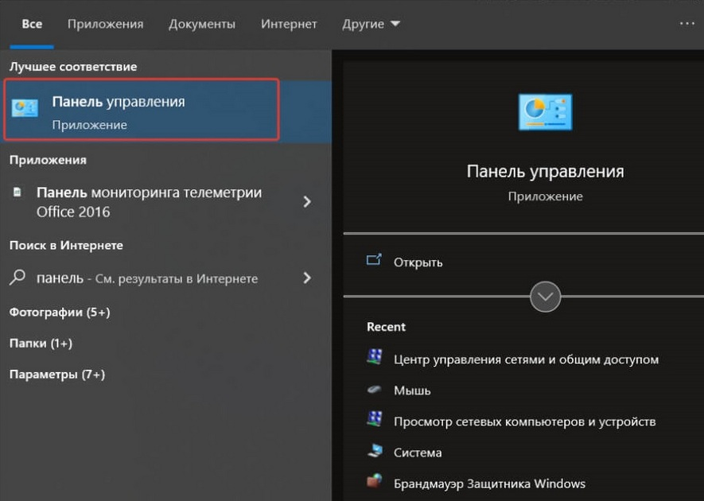
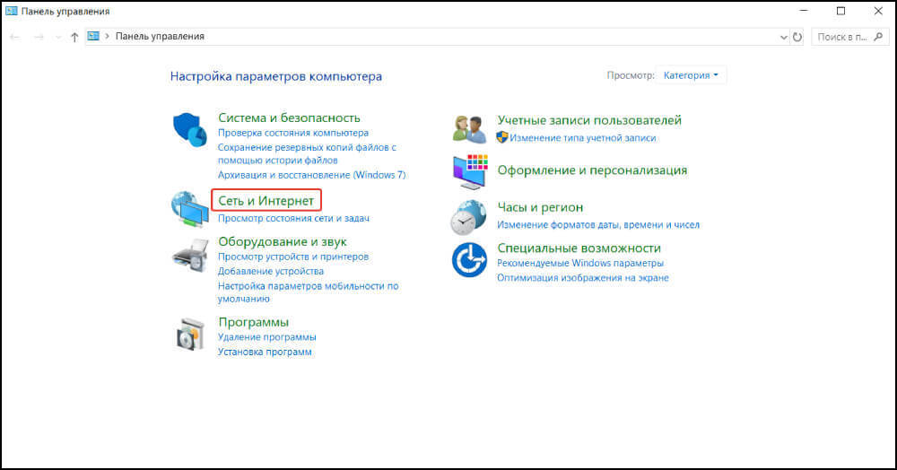
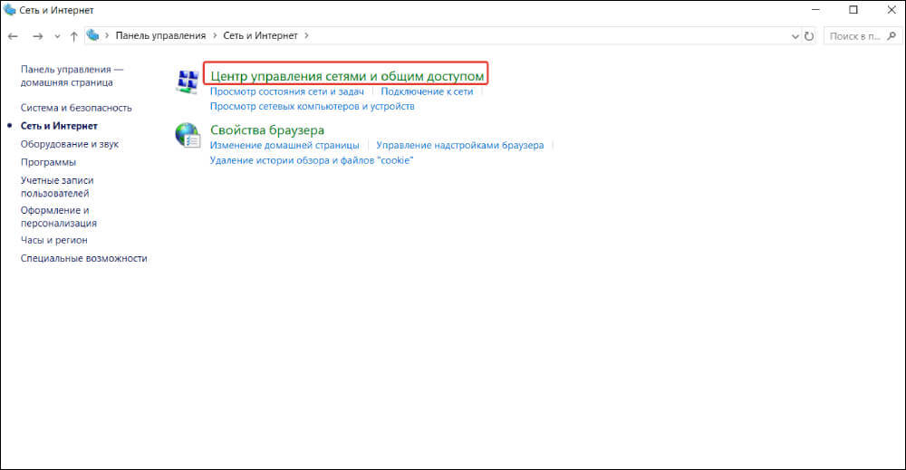
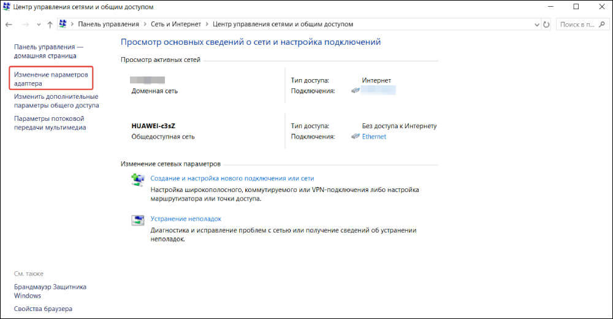
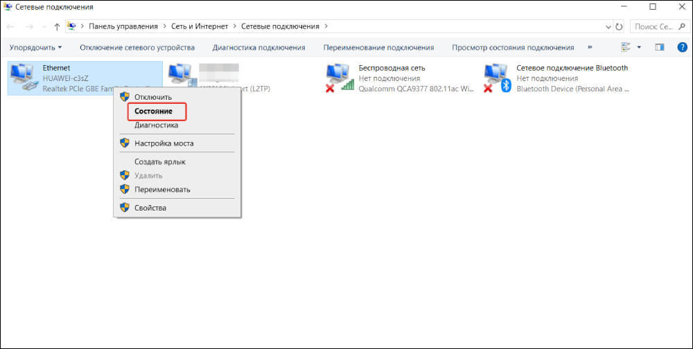
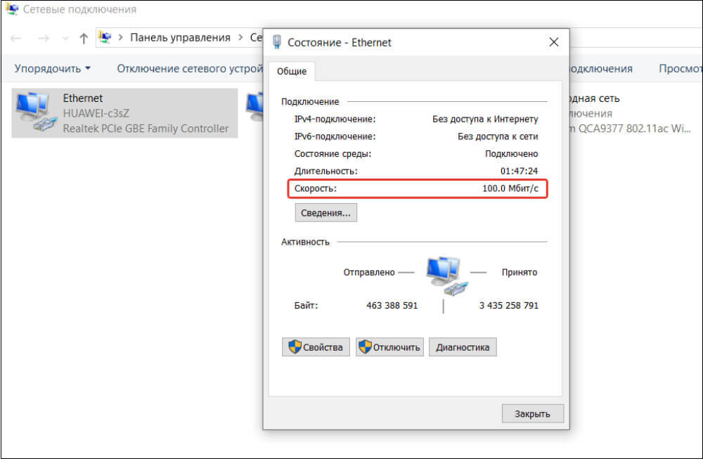
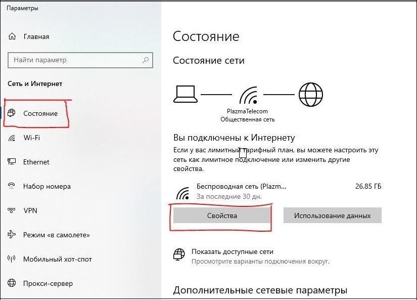
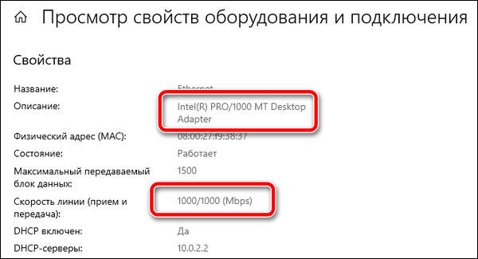

Проверка скорости
Определяем потенциал пропускной способности в Windows 7
Определяем потенциал пропускной способности
1. Запустите «Панель управления»;

2. перейдите в раздел «Сеть и Интернет»;

3. откройте подраздел «Центр управления сетями и общим доступом»;

4. В левой части окна найдите кликабельную строчку «Изменение параметров адаптера» и щёлкните по ней ЛКМ

5. В открывшемся окне найдите активное интернет-соединение и нажмите на него ПКМ
6. Выберите пункт «Состояние»;

7. найдите строку «Скорость» — там и будет указана максимально возможная пропускная способность.

Проверка пропускной способности в Windows 10
Выполните следующие действия, чтобы проверить скорость интернета в Windows 10:
1. Перейти к параметрам, нажав одновременно клавиши Win и I или ПКМ мыши на значок WiFi
2. Теперь перейдите на вкладку Состояние и перейдите к «Просмотр свойств оборудования и подключения» в разделе

3. Затем в разделе свойств найдите Сетевой адаптер (Wi-Fi или Ethernet) и найдите поле Скорость линии (прием и передача), чтобы проверить скорость вашего соединения.

Проверка пропускной способности в Windows 11
Выполните следующие действия, чтобы проверить скорость интернета в Windows 11:
1. Перейти Пуск, затем Настройки, Сеть и Интернет
.png)
2. Затем в разделе свойств Ethernet найти Совокупная Скорость линии (прием и передача), чтобы проверить скорость вашего соединения.
.png)